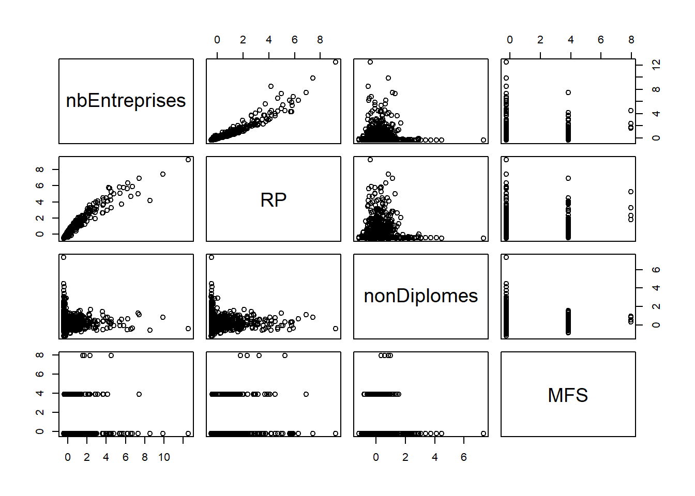
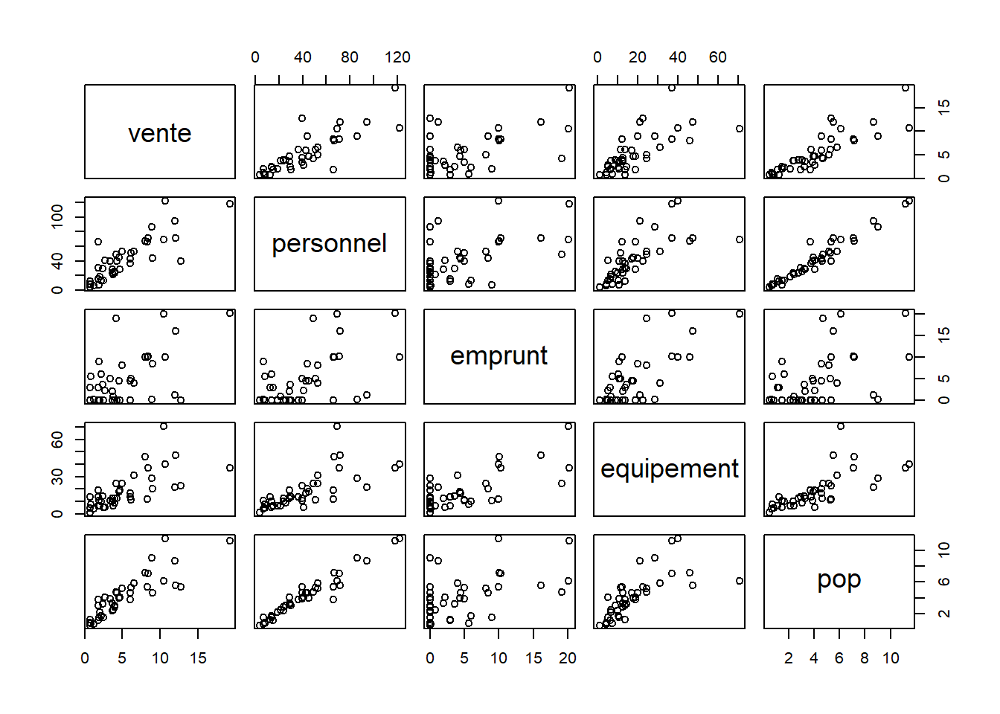

Mutivariées base
1 Attention définition !
On parle ici d’analyse factorielle. Il ne s’agit pas de facteur explicatif mais de synthèse, de description.
2 La donnée
Il s’agit d’émettre une hypothèse, mais aussi de rendre les variables comparables entre elles.
2.1 Recherche
Comparaison donnée RPLS et insee à la base communes avec un outil très intuitif
https://statistiques-locales.insee.fr
2.1.1 Exploration autour de l’outil
Chercher à construire un tableau au niveau des communes avec

Quels sont les outils de l’interface à utiliser ?
2.2 Hypothèse multivariée
2.2.1 La première
Formuler une hypothèse avec les 4 variables sélectionnées.
Par exemple, nous allons voir si le nombre d’entreprises a un lien avec - le nombre de résidences principales (recrutement local) - la part des non diplomes (les non diplomés vont sur un emploi proche) - et l’implantation des maisons france service (les maisons france service permettent le développement de l’emploi local)
(exercice moodle)
2.3 Normaliser sa donnée
2.3.1 Examen des valeurs de dispersion / centrales
Pour chaque variable, il faut chercher s’il n’y a pas de valeur aberrante.
“Les individus trop spécifiques brouillent le résumé.” (Chaudule, p. 138)
summary(data)## nbEntreprises RP nonDiplomes MFS
## Min. : 0.0 Min. : 6.0 Min. : 0.00 Min. :0.00000
## 1st Qu.: 26.0 1st Qu.: 154.5 1st Qu.: 6.75 1st Qu.:0.00000
## Median : 77.0 Median : 383.0 Median : 13.00 Median :0.00000
## Mean : 980.5 Mean : 3548.1 Mean : 13.91 Mean :0.06004
## 3rd Qu.: 383.5 3rd Qu.: 2025.0 3rd Qu.: 18.20 3rd Qu.:0.00000
## Max. :551111.0 Max. :1137759.0 Max. :100.00 Max. :6.00000
## NA's :37rownames(data)## [1] "9100" "9101" "9102" "9103" "9104" "9105" "9106" "9107" "9108"
## [10] "9109" "9110" "9111" "9113" "9114" "9115" "9116" "9117" "9118"
## [19] "9119" "9120" "9121" "9122" "9123" "9124" "9125" "9126" "9127"
## [28] "9128" "9129" "9130" "9131" "9132" "9133" "9134" "9136" "9137"
## [37] "9138" "9139" "9140" "9141" "9142" "9143" "9145" "9146" "9147"
## [46] "9148" "9149" "9150" "9151" "9152" "9153" "9154" "9155" "9156"
## [55] "9157" "9158" "9159" "9160" "9161" "9162" "9163" "9164" "9165"
## [64] "9166" "9167" "9168" "9169" "9170" "9171" "9172" "9173" "9174"
## [73] "9175" "9176" "9177" "9178" "9179" "9180" "9181" "9182" "9183"
## [82] "9184" "9185" "9186" "9187" "9188" "9189" "9190" "9192" "9193"
## [91] "9194" "9195" "9196" "9197" "9198" "9199" "9200" "9201" "9202"
## [100] "9203" "9204" "9205" "9206" "9207" "9208" "9209" "9210" "9211"
## [109] "9212" "9213" "9214" "9215" "9216" "9217" "9218" "9219" "9220"
## [118] "9221" "9222" "9223" "9224" "9225" "9226" "9227" "9228" "9229"
## [127] "9230" "9231" "9232" "9233" "9234" "9235" "9236" "9237" "9238"
## [136] "9239" "9240" "9241" "9242" "9243" "9244" "9245" "9246" "9247"
## [145] "9249" "9250" "9251" "9252" "9253" "9254" "9255" "9256" "9257"
## [154] "9258" "9259" "9260" "9261" "9262" "9263" "9264" "9265" "9266"
## [163] "9267" "9268" "9269" "9270" "9271" "9272" "9273" "9274" "9275"
## [172] "9276" "9277" "9279" "9280" "9281" "9282" "9283" "9284" "9285"
## [181] "9287" "9289" "9290" "9291" "9292" "9293" "9294" "9295" "9296"
## [190] "9297" "9298" "9299" "9300" "9301" "9303" "9304" "9305" "9306"
## [199] "9307" "9308" "9309" "9310" "9311" "9312" "9313" "9314" "9315"
## [208] "9316" "9318" "9319" "9320" "9321" "9322" "9323" "9324" "9325"
## [217] "9326" "9327" "9328" "9329" "9330" "9331" "9332" "9334" "9335"
## [226] "9336" "9338" "9339" "9340" "9341" "9342" "75056" "77001" "77002"
## [235] "77003" "77004" "77005" "77006" "77007" "77008" "77009" "77010" "77011"
## [244] "77012" "77013" "77014" "77015" "77016" "77018" "77019" "77020" "77021"
## [253] "77022" "77023" "77024" "77025" "77026" "77027" "77029" "77030" "77031"
## [262] "77032" "77033" "77034" "77035" "77036" "77037" "77038" "77039" "77040"
## [271] "77041" "77042" "77043" "77044" "77045" "77046" "77047" "77048" "77049"
## [280] "77050" "77051" "77052" "77053" "77054" "77055" "77056" "77057" "77058"
## [289] "77059" "77060" "77061" "77062" "77063" "77065" "77066" "77067" "77068"
## [298] "77069" "77070" "77071" "77072" "77073" "77075" "77076" "77077" "77078"
## [307] "77079" "77080" "77081" "77082" "77083" "77084" "77085" "77086" "77087"
## [316] "77088" "77089" "77090" "77091" "77093" "77094" "77095" "77096" "77097"
## [325] "77098" "77099" "77100" "77101" "77102" "77103" "77104" "77106" "77107"
## [334] "77108" "77109" "77110" "77111" "77112" "77113" "77114" "77115" "77116"
## [343] "77117" "77118" "77119" "77120" "77121" "77122" "77123" "77124" "77125"
## [352] "77126" "77127" "77128" "77129" "77130" "77131" "77132" "77133" "77134"
## [361] "77135" "77136" "77137" "77138" "77139" "77140" "77141" "77142" "77143"
## [370] "77144" "77145" "77146" "77147" "77148" "77150" "77151" "77152" "77153"
## [379] "77154" "77155" "77156" "77157" "77158" "77159" "77161" "77162" "77163"
## [388] "77164" "77165" "77167" "77168" "77169" "77171" "77172" "77173" "77174"
## [397] "77175" "77176" "77177" "77178" "77179" "77180" "77181" "77182" "77183"
## [406] "77184" "77185" "77186" "77187" "77188" "77190" "77191" "77192" "77193"
## [415] "77194" "77195" "77196" "77197" "77198" "77199" "77200" "77201" "77202"
## [424] "77203" "77204" "77205" "77206" "77207" "77208" "77209" "77210" "77211"
## [433] "77212" "77214" "77215" "77216" "77217" "77218" "77219" "77220" "77221"
## [442] "77222" "77223" "77224" "77225" "77226" "77227" "77228" "77229" "77230"
## [451] "77231" "77232" "77233" "77234" "77235" "77236" "77237" "77238" "77239"
## [460] "77240" "77241" "77242" "77243" "77244" "77245" "77246" "77247" "77248"
## [469] "77249" "77250" "77251" "77252" "77253" "77254" "77255" "77256" "77257"
## [478] "77258" "77259" "77260" "77261" "77262" "77263" "77264" "77265" "77266"
## [487] "77267" "77268" "77269" "77270" "77271" "77272" "77273" "77274" "77275"
## [496] "77276" "77277" "77278" "77279" "77280" "77281" "77282" "77283" "77284"
## [505] "77285" "77286" "77287" "77288" "77289" "77290" "77291" "77292" "77293"
## [514] "77294" "77295" "77296" "77297" "77298" "77300" "77301" "77302" "77303"
## [523] "77304" "77305" "77306" "77307" "77308" "77309" "77310" "77311" "77312"
## [532] "77313" "77314" "77315" "77316" "77317" "77318" "77319" "77320" "77321"
## [541] "77322" "77323" "77325" "77326" "77327" "77328" "77329" "77330" "77331"
## [550] "77332" "77333" "77335" "77336" "77337" "77338" "77339" "77340" "77341"
## [559] "77342" "77343" "77344" "77345" "77347" "77348" "77349" "77350" "77352"
## [568] "77353" "77354" "77355" "77356" "77357" "77358" "77359" "77360" "77361"
## [577] "77363" "77364" "77365" "77366" "77367" "77368" "77369" "77370" "77371"
## [586] "77372" "77373" "77374" "77376" "77377" "77378" "77379" "77380" "77381"
## [595] "77382" "77383" "77384" "77385" "77386" "77387" "77388" "77389" "77390"
## [604] "77391" "77392" "77393" "77394" "77395" "77396" "77397" "77398" "77400"
## [613] "77401" "77402" "77403" "77404" "77405" "77406" "77407" "77408" "77409"
## [622] "77410" "77411" "77412" "77413" "77414" "77415" "77416" "77417" "77418"
## [631] "77419" "77420" "77421" "77423" "77424" "77425" "77426" "77427" "77428"
## [640] "77429" "77430" "77431" "77432" "77433" "77434" "77435" "77436" "77437"
## [649] "77438" "77439" "77440" "77441" "77442" "77443" "77444" "77445" "77446"
## [658] "77447" "77448" "77449" "77450" "77451" "77452" "77453" "77454" "77455"
## [667] "77456" "77457" "77458" "77459" "77460" "77461" "77462" "77463" "77464"
## [676] "77465" "77466" "77467" "77468" "77469" "77470" "77471" "77472" "77473"
## [685] "77474" "77475" "77476" "77477" "77478" "77479" "77480" "77481" "77482"
## [694] "77483" "77484" "77485" "77486" "77487" "77489" "77490" "77492" "77493"
## [703] "77494" "77495" "77496" "77498" "77500" "77501" "77504" "77505" "77506"
## [712] "77507" "77508" "77509" "77510" "77511" "77512" "77513" "77514" "77515"
## [721] "77516" "77517" "77518" "77519" "77520" "77521" "77522" "77523" "77524"
## [730] "77525" "77526" "77527" "77528" "77529" "77530" "77531" "77532" "77533"
## [739] "77534" "78003" "78005" "78006" "78007" "78009" "78010" "78013" "78015"
## [748] "78020" "78029" "78030" "78031" "78033" "78034" "78036" "78043" "78048"
## [757] "78049" "78050" "78053" "78057" "78062" "78068" "78070" "78071" "78072"
## [766] "78073" "78076" "78077" "78082" "78084" "78087" "78089" "78090" "78092"
## [775] "78096" "78104" "78107" "78108" "78113" "78117" "78118" "78120" "78123"
## [784] "78124" "78125" "78126" "78128" "78133" "78138" "78140" "78143" "78146"
## [793] "78147" "78152" "78158" "78160" "78162" "78163" "78164" "78165" "78168"
## [802] "78171" "78172" "78185" "78188" "78189" "78190" "78192" "78193" "78194"
## [811] "78196" "78202" "78206" "78208" "78209" "78217" "78220" "78224" "78227"
## [820] "78230" "78231" "78233" "78234" "78236" "78237" "78238" "78239" "78242"
## [829] "78245" "78246" "78255" "78261" "78262" "78263" "78264" "78265" "78267"
## [838] "78269" "78276" "78278" "78281" "78283" "78285" "78289" "78290" "78291"
## [847] "78296" "78297" "78299" "78300" "78302" "78305" "78307" "78310" "78311"
## [856] "78314" "78317" "78320" "78321" "78322" "78324" "78325" "78327" "78329"
## [865] "78334" "78335" "78337" "78343" "78344" "78346" "78349" "78350" "78354"
## [874] "78356" "78358" "78361" "78362" "78364" "78366" "78367" "78368" "78372"
## [883] "78380" "78381" "78382" "78383" "78384" "78385" "78389" "78391" "78396"
## [892] "78397" "78398" "78401" "78402" "78403" "78404" "78406" "78407" "78410"
## [901] "78413" "78415" "78416" "78417" "78418" "78420" "78423" "78431" "78437"
## [910] "78439" "78440" "78442" "78443" "78444" "78451" "78455" "78460" "78464"
## [919] "78465" "78466" "78470" "78472" "78474" "78475" "78478" "78481" "78484"
## [928] "78486" "78490" "78497" "78498" "78499" "78501" "78502" "78505" "78506"
## [937] "78513" "78516" "78517" "78518" "78520" "78522" "78528" "78530" "78531"
## [946] "78536" "78537" "78545" "78548" "78550" "78551" "78557" "78558" "78559"
## [955] "78561" "78562" "78564" "78565" "78567" "78569" "78571" "78575" "78576"
## [964] "78586" "78588" "78590" "78591" "78597" "78601" "78605" "78606" "78608"
## [973] "78609" "78615" "78616" "78618" "78620" "78621" "78623" "78624" "78638"
## [982] "78640" "78642" "78643" "78644" "78646" "78647" "78650" "78653" "78655"
## [991] "78668" "78672" "78674" "78677" "78681" "78683" "78686" "78688" "91001"
## [1000] "91016" "91017" "91021" "91022" "91027" "91035" "91037" "91038" "91041"
## [1009] "91044" "91045" "91047" "91064" "91067" "91069" "91075" "91079" "91080"
## [1018] "91081" "91085" "91086" "91093" "91095" "91097" "91098" "91099" "91100"
## [1027] "91103" "91105" "91106" "91109" "91111" "91112" "91114" "91115" "91121"
## [1036] "91122" "91129" "91130" "91131" "91132" "91135" "91136" "91137" "91145"
## [1045] "91148" "91156" "91159" "91161" "91174" "91175" "91179" "91180" "91184"
## [1054] "91186" "91191" "91195" "91198" "91200" "91201" "91204" "91207" "91215"
## [1063] "91216" "91223" "91225" "91226" "91228" "91232" "91235" "91240" "91243"
## [1072] "91244" "91247" "91248" "91249" "91272" "91273" "91274" "91275" "91284"
## [1081] "91286" "91292" "91293" "91294" "91312" "91315" "91318" "91319" "91326"
## [1090] "91330" "91332" "91333" "91338" "91339" "91340" "91345" "91347" "91359"
## [1099] "91363" "91374" "91376" "91377" "91378" "91386" "91390" "91393" "91399"
## [1108] "91405" "91408" "91411" "91412" "91414" "91421" "91425" "91432" "91433"
## [1117] "91434" "91435" "91441" "91457" "91458" "91461" "91463" "91468" "91469"
## [1126] "91471" "91473" "91477" "91479" "91482" "91494" "91495" "91507" "91508"
## [1135] "91511" "91514" "91519" "91521" "91525" "91526" "91533" "91534" "91538"
## [1144] "91540" "91544" "91546" "91547" "91549" "91552" "91553" "91556" "91560"
## [1153] "91568" "91570" "91573" "91577" "91578" "91579" "91581" "91587" "91589"
## [1162] "91593" "91599" "91600" "91602" "91613" "91617" "91619" "91629" "91630"
## [1171] "91631" "91634" "91635" "91639" "91645" "91648" "91649" "91654" "91657"
## [1180] "91659" "91661" "91662" "91665" "91666" "91667" "91671" "91679" "91685"
## [1189] "91687" "91689" "91691" "91692" "92002" "92004" "92007" "92009" "92012"
## [1198] "92014" "92019" "92020" "92022" "92023" "92024" "92025" "92026" "92032"
## [1207] "92033" "92035" "92036" "92040" "92044" "92046" "92047" "92048" "92049"
## [1216] "92050" "92051" "92060" "92062" "92063" "92064" "92071" "92072" "92073"
## [1225] "92075" "92076" "92077" "92078" "93001" "93005" "93006" "93007" "93008"
## [1234] "93010" "93013" "93014" "93015" "93027" "93029" "93030" "93031" "93032"
## [1243] "93033" "93039" "93045" "93046" "93047" "93048" "93049" "93050" "93051"
## [1252] "93053" "93055" "93057" "93059" "93061" "93062" "93063" "93064" "93066"
## [1261] "93070" "93071" "93072" "93073" "93074" "93077" "93078" "93079" "94001"
## [1270] "94002" "94003" "94004" "94011" "94015" "94016" "94017" "94018" "94019"
## [1279] "94021" "94022" "94028" "94033" "94034" "94037" "94038" "94041" "94042"
## [1288] "94043" "94044" "94046" "94047" "94048" "94052" "94053" "94054" "94055"
## [1297] "94056" "94058" "94059" "94060" "94065" "94067" "94068" "94069" "94070"
## [1306] "94071" "94073" "94074" "94075" "94076" "94077" "94078" "94079" "94080"
## [1315] "94081" "95002" "95008" "95011" "95012" "95014" "95018" "95019" "95023"
## [1324] "95024" "95026" "95028" "95039" "95040" "95042" "95046" "95051" "95052"
## [1333] "95054" "95055" "95056" "95058" "95059" "95060" "95061" "95063" "95074"
## [1342] "95078" "95088" "95091" "95094" "95101" "95102" "95110" "95116" "95119"
## [1351] "95120" "95127" "95134" "95139" "95141" "95142" "95144" "95149" "95150"
## [1360] "95151" "95154" "95157" "95166" "95169" "95170" "95176" "95177" "95181"
## [1369] "95183" "95197" "95199" "95203" "95205" "95210" "95211" "95212" "95213"
## [1378] "95214" "95218" "95219" "95229" "95241" "95250" "95252" "95253" "95254"
## [1387] "95256" "95257" "95258" "95268" "95270" "95271" "95277" "95280" "95282"
## [1396] "95287" "95288" "95295" "95298" "95301" "95303" "95304" "95306" "95308"
## [1405] "95309" "95313" "95316" "95323" "95328" "95331" "95341" "95348" "95351"
## [1414] "95352" "95353" "95355" "95365" "95369" "95370" "95371" "95379" "95387"
## [1423] "95388" "95392" "95394" "95395" "95409" "95422" "95424" "95426" "95427"
## [1432] "95428" "95429" "95430" "95436" "95438" "95445" "95446" "95447" "95450"
## [1441] "95452" "95456" "95459" "95462" "95476" "95480" "95483" "95487" "95488"
## [1450] "95489" "95491" "95492" "95493" "95500" "95504" "95509" "95510" "95523"
## [1459] "95527" "95529" "95535" "95539" "95541" "95543" "95554" "95555" "95563"
## [1468] "95566" "95572" "95574" "95580" "95582" "95584" "95585" "95592" "95594"
## [1477] "95598" "95604" "95607" "95610" "95611" "95612" "95625" "95627" "95628"
## [1486] "95633" "95637" "95641" "95651" "95652" "95656" "95658" "95660" "95675"
## [1495] "95676" "95678" "95680" "95682" "95690"# Suppression de valeur extrême nbEntreprises, autres suppressions ?
data [data$nbEntreprises > 500000,]## nbEntreprises RP nonDiplomes MFS
## 75056 551111 1137759 9.9 6data <- data [data$nbEntreprises < 500000,]Refaire la commande pairs
Les coefficients de variation permettent également une première approche
data <- data [!is.na(data$nonDiplomes),]
coeffVariation <- function (x) {mean(x)/sd(x)}
coeff <- sapply(data, coeffVariation)
sd <- sapply(data, sd)
moy <- sapply(data, mean)
tab <- cbind(moy,sd, coeff)
round(tab,2)## moy sd coeff
## nbEntreprises 628.66 1580.49 0.40
## RP 2860.88 6156.68 0.46
## nonDiplomes 13.91 11.77 1.18
## MFS 0.06 0.24 0.242.3.2 Centrage et réduction
Il faut pouvoir comparer les valeurs des variables indépendamment de l’unité originelle
écart à la moyenne de la valeur / écart-type
2 opérations :
centrage : écart à la moyenne (comme une translation graphique)
réduction : division par l’écart type, on exprime la différence en écart-type (comme un changement d’échelle)
La variable standardisée a pour moyenne 0 et pour écart-type 1
data_cr <- scale (data)
pairs(data_cr)
2.4 Les axes en géométrie
Les axes factoriels rendent comptent le mieux possible de la dispersion du nuage de points.
Un facteur regroupe des informations communes à plusieurs variables.
Le premier axe prend en compte le maximum d’information.
Le deuxième prend en compte le maximum d’information à partir des résidus du premier.
Et ainsi de suite …
… d’où l’importance de l’informatique pour traiter du multicritère !

3 Les calculs sous R
3.1 Les axes factoriels
acp <- prcomp(data_cr)
# par défaut direction négative on inverse
acp$rotation <- -1 * acp$rotation
acp$rotation## PC1 PC2 PC3 PC4
## nbEntreprises -0.6581547 0.1503045 0.2337428 0.699718000
## RP -0.6680985 0.1247899 0.1727070 -0.712912435
## nonDiplomes -0.1244226 -0.9614748 0.2450033 0.007655912
## MFS -0.3240306 -0.1933965 -0.9249378 0.0457380253.2 Importance des axes
acp$sdev^2 / sum(acp$sdev^2)## [1] 0.526980798 0.247538881 0.216703899 0.00877642273 % de la variance pris en compte par le premier axe, etc…
Le premier axe résume la variation de la moitié des valeurs des 4 variables.
L’axe 3 a une haute valeur pour le logement.
Le nombre d’emploi et le diplôme sont liés et s’opposent au surlogement et aux taux de natalité.
3.2.1 Pour les individus (ici les départements)
head(acp$x*-1)## PC1 PC2 PC3 PC4
## 9100 0.7881299 1.0654838 -0.24302390 0.02968341
## 9101 0.7764604 1.0678193 -0.23964507 0.02521487
## 9102 0.7833349 1.0664660 -0.24158314 0.02900214
## 9103 0.5729002 -0.1815224 0.09281468 0.02360744
## 9104 0.7048708 0.7972979 -0.15858954 0.01332533
## 9105 0.2576725 -2.5476227 0.69958913 0.05617542biplot(acp, scale = 0)
Les départements proches suivent le même modèle de données. Leur position dans le graphique montre leur rapport aux variables.
Dans le cas présent, les variables ne suivent pas les axes (problème des valeurs aberrantes).
4 Second traitement
Supprimer les valeurs posant problème et relancer les calculs. Essayer d’interpréter.
L5GEABIM Analyses bivariées et multivariées